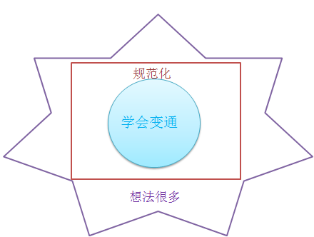
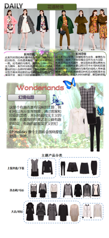

浏览器不支持如此高级的演示文稿(impressJs).请使用谷歌Chrome
实习工作阶段性总结
2014年7月7号 — 8月29号
汇报人: 陆明艳
实习体验
初进公司，还是个没有任何社会经验且充满幻想的天真学生，对整个新环境充满新奇和紧张。
慢慢地去了解雅莹公司的企业文化，逐渐完成一个学生悠闲生活到工作规律生活的转变。
在认真完成导师分配任务的同时慢慢适应从学校到社会人的心态改变，这个期间，能发现自己
的不足也能知道未来努力的方向。

主要工作
- 1. 3天的店铺零售工作
- 2. EP秋冬款的FAB文案描写
- 3. 8、9月上线货品培训资料
- 4. 8-12月线上产品明细整合
- 5. 8-12月线上产品下单表
- 6. EP秋冬款的FAB文案描写
- 7. 8月拍照款的整合
- 8. 8月19号拍照款的搭配方案
店铺零售
- 1. 基本礼仪
- 基本礼仪的学习是成为优雅雅莹人的基础，是一个品牌零售终端的门面。
- 2. 如何看吊牌
- 吊牌的基本知识能让我更好的熟悉货品，也成为来到总部实习的优先必备知识。
- 3. 基础销售技巧
- 我所在店铺人都很可爱，大家热心的教我他们的经验技巧，如先观察顾客的整体着装，与她聊天了解需求等等。

FAB文案描写

资料整合

- 1. 耐心和细心
- 资料的整理最主要的是耐心，因为是一些重复而繁琐的基础工作，同时要足够细心才能避免更多的错误。这个工作
也充分磨合了我急躁的性格。
- 2. 排版美观性
- 不管是ppt还是excel表格，导师都告诉我要注重整体的排版。先前在学校关注更多的是简洁精练，而在工作中对整
体美观也越来越关注。
- 3. PPT、Excel更熟练的操作
- 在雅莹两个月，PPT和Excel的充分运用，让我学到很多新的功能应用。当然这离不开同事的帮助以及强大的百度，
提升了自己学习的能力。
8、9月上线货品培训资料
- 1. 资料搜集
- 充分利用已有素材，在此基础上搜集一些网络资料。在这方面可能是自己百度关键词不够贴合，合适的图片资料查找有点耗时，效率不高。
- 2. 排版
- 一部分排版参考资料，还有一些自己设计，整体来说比较满意。
- 3. 思考和构思
- 思考PPT做的目的性，在此基础上想想需要什么素材，给什么人看，然后理清思路。大的方向导师已经给出，需要在此基础上思考如何充实培训资料，有一定的独立思考，不过文案内容缺乏自我创新的部分。

8月19号拍照款的搭配方案

对比下有很大差距，自己的一般只会有一种搭配，而且比较普通保守，没法展现出雅莹服装不
一般的感觉。同时在色彩和配饰搭配上，右边的会很丰富，而自己做的就很单调，需要以后好
好加强锻炼。
其他工作
- 1. 帮助同事做一些力所能及的事，比如整理面料、秋冬服装等；
- 2. 去摄影棚帮忙拍照；
- 3. 订货会上记录订货人员对Holiday系列的意见并做整理；
- 4. 做一些简单资料的搜集，比如流行色、雅莹品牌理念的相关图片；
- 5. 在空余时间做一些资料的搜集，包括电商O2O、服装廓型分类以及一些相关服装的英文表达。

不足与反思
- 1. 没有明确计划
- 第一个月在融入环境的同时，大多是等着导师给我们分配任务， 没有形成一个完整的的计划性工作，
因而可能会因为人多你一言我一语而浪费时间。
- 2. 沟通能力不足
- 来雅莹有个很大的问题就是自己没有经常主动去问，可能也跟自己的性格有关，有些事不愿意去打扰
别人。以后需要多和别人沟通，这不仅能学习更多东西也能更好地表达自己的想法。
- 3. 缺乏深入思考
- 开始做事时，导师让做什么就做什么，没有深入思考过是用来干什么的，这个状态对于高质量完成工
作是个大忌，你不能明确它的目的性就很难很好的把握做的内容。
- 3. 设计搭配能力欠缺
- 在做服装搭配时，我深刻感受到自己在搭配能力方面的欠缺，这个方面在回学校后一定要加强锻炼，
多看一些书籍与视频。
未来计划
我非常希望自己将来能有机会正式成为一名真正的雅莹人。在这为期不算长的两
个月实习期间，身边的每一个雅莹员工所表现出来的那种对于自己工作的严谨认真和
专注激情，都是我所心驰神往的。
与他们相比较，我深知自己还有一些不足：有时对工作不够细致，细节方面处理
并不算到位；有时则有一些马虎，在完成一些任务过程不算太严谨……
不过幸好我还有时间，我还有机会去锻炼自己。社会是最好的大学，雅莹于我，
就是我心中那座最高的学习殿堂。如果有幸能入学雅莹，我对继续自己的学习生涯有
着这样规划：
首先， 要尽快熟悉所在部门的整个工作流程，了解自己的工作性质；
然后，不断向同事学习，很快融入自己的工作并不断提高自己；
最后，能够独当一面。